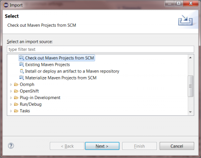
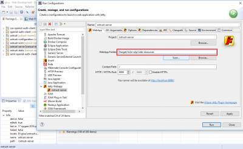

How to Build oxTrust with Eclipse#
Overview#
This section of the document discusses how to build oxTrust using Eclipse. This guide can be followed by developers and architects to code and customize oxTrust.
Note
this installation procedure assumes you have a local VM running an instance of the Gluu Server CE.
Gluu CE installation is discussed in the Installation Guide.
Testing and Beta release can be found here: Beta Release
Summary#
Here is a quick summary:
We will be building latest branch
# wget https://repo.gluu.org/centos/Gluu-centos7.repo -O /etc/yum.repos.d/Gluu.repo
# wget https://repo.gluu.org/centos/RPM-GPG-KEY-GLUU -O /etc/pki/rpm-gpg/RPM-GPG-KEY-GLUU
# rpm –import /etc/pki/rpm-gpg/RPM-GPG-KEY-GLUU
# yum clean all
# yum install gluu-server-3.0.1
# /sbin/gluu-serverd-3.0.1 start
# /sbin/gluu-serverd-3.0.1 enable
# /sbin/gluu-serverd-3.0.1 login
Note
This documentation is prepared based on CentOS, follow the appropriate installation guide based on your OS.
Gluu Server will run in chroot
# cd /install/community-edition-setup/
# ./setup.py
You can mostly go with default values, however I suggest you make sure that oxTrust and LDAP servers are installed, and oxAuth is not.
Install oxAuth OAuth2 Authorization Server? [Yes] : no
Install oxTrust Admin UI? [Yes] :
Install LDAP Server? [Yes] :
Install Apache HTTPD Server [Yes] : no
Now we need to collect critical configuration files and test data need for development environment:
# mkdir /root/configs/
# /opt/opendj/bin/ldapsearch -h localhost -p 1636 -D “cn=directory manager,o=gluu” -w “<LDAP superuser password>” -ZXT -b “o=gluu” “objectclass=*” > /root/configs/everything.ldif
# cp /etc/gluu/conf/ox-ldap.properties /root/configs/
# cp /etc/gluu/conf/salt /root/configs/
# cp /opt/gluu/schema/openldap/*.schema /root/configs/
# tar -czf /root/configs.tgz /root/configs
Now leave chroot
# logout
root directory of gluu chroot jail is /opt/gluu-server-3.0.1/
download /opt/gluu-server-3.0.1/root/configs.tgz to your machine.
Download Software#
Download below mentioned required softwares. And this assumes you're using Windows 64-bit operating sytsem. If you're using Mac or 32-bit Windows, adjust accordingly.
Java#
Download Java 1.8,
When you install it, make sure you install both the JDK and the JRE in c:\java (not Program Files).
Each of these software distributions should just be unzipped under C:\java\jdk1.8.0_112 on my system.
Updates your JAVA_HOME environment variable to point to the folder of your jdk, for example
Eclipse#
Download Eclipse IDE for Java EE Developers
Maven#
Download the latest Mavenbinary zip
Jetty#
Download latest zip of Jetty 9
Jython#
Download Jython and install in c:\jython2.7.0
Keystore Explorer#
This is optional, but convenient. You can find it on SorceForge.
Configure Eclipse#
Install JBoss Tools Plugin#
In the Help / Eclipse Marketplace menu add “JBoss Tools”

Set Perspective to Web Development#
In the upper right hand corner, select the Web Development perspective from the pop-up menu.

Set Java 1.8 as JDK#
From the Window / Preferences menu, just check the Java / Installed JRE's tab and make sure you see your 1.8 JDK (not JRE).

Add External Maven#
Use the external maven you installed, not the built in maven.
In Window / Preferences, there is a section for Maven.
Under the Installations section, add the Maven folder you installed in c:\java

Install Eclipse Jetty Launcher#
You should be able to install Jetty Launcher using either of the methods
If You want to run jetty in Eclipse, you can download and install Jetty Launcher from eclipse marketplace
Or Jetty Launcher can be installed directly from eclipse marketplace

Turn off Validation#
Document validation throws a lot of errors, and its better to see these as Warnings.

Import Projects#
For each of these sections, you will have to use File / Import and then provide the Github URL

And then specify the github url

You can find this URL on github

After importing all the projects, it will take some time to download and compile all the code. When everything is done building, you can set up run configuration for oxTrust to launch using Jetty:

Select m2e-wtp webapp folder for deployment in Jetty

Add VM arguments to jetty to specify location of oxTrust configuration. You can just create two empty directories for now.
Those directories will contain gluu configuration and logs:

Change jetty version in eclipse plugin to the one you downloaded earlier:

Add configuration listener to oxtrust-server/src/main/webapp/WEB-INF/web.xml:

OxTrust styles are packaged in a separate project oxtrust-static. In order for jetty to correcty serve those styles close the oxtrust-static project in eclipse and by updating the project under
Maven>Update Projectonoxtrust>server project.
Configuration#
To get your oxTrust running, you'll need to copy some file from your Gluu Server Community Edition (CE) installation.
This assumes you've deployed CE, and run setup.py, and that its working.
Add conf subdirectory to the one you referenced in gluu.base VM argument (e.g. C:\home\gluu\conf\)
From the configs.tgz you downloaded earlier extract these files:
- configs/ox-ldap.properties
- configs/salt
into the conf subdirectory you created (e.g. C:\home\gluu\conf\ox-ldap.properties)
Install and configure Symas OpenLDAP#
1. Download Silver Edition from: https://downloads.symas.com/SDLPWeb
2. Create folder for custom Gluu schema: C:\Program Files (x86)\symas-openldap\etc\openldap\schema
3. Copy into custom Gluu schema folder 2 files from CE /opt/gluu-server-3.0.1/opt/gluu/schema/openldap
4. Copy C:\Program Files (x86)\symas-openldap\etc\openldap\slapd.conf.default into C:\Program Files (x86)\symas-openldap\etc\openldap\slapd.conf
5. Edit file C:\Program Files (x86)\symas-openldap\etc\openldap\slapd.conf
- Uncommnet next lines:
include `etc/openldap/schema/ppolicy.schema`
include `etc/openldap/schema/cosine.schema`
include `etc/openldap/schema/inetorgperson.schema`
include `etc/openldap/schema/eduperson.schema`
- Add next include lines:
include `etc/openldap/gluu/gluu.schema`
include `etc/openldap/gluu/custom.schema`
- Uncomment modules:
moduleload ppolicy.la
moduleload unique.la
- Copy from CE file /opt/gluu-server-3.0.1/opt/symas/etc/openldap/slapd.conf sections into
C:\Program Files (x86)\symas-openldap\etc\openldap\slapd.conf:
#######################################################################
# Main Database housing all the o=gluu info
#######################################################################
...
#######################################################################
# Site database housing o=site information
#######################################################################
Hint: End last section is after line: index gluuStatus
- Replace in sections
Main DatabaseandSite database:database mdbwithdatabase hdb- rootpw with your clear text password.
- directory location
/opt/gluu/datawithvar/openldap-data.
- Remove in sections
Main DatabaseandSite databasemaxsize option.
6. Create new DB folders:
- C:\Program Files (x86)\symas-openldap\var\openldap-data\main_db
- C:\Program Files (x86)\symas-openldap\var\openldap-data\site_db
7. Copy default DB settings (rename DB_CONFIG.default to DB_CONFIG during copy):
- C:\Program Files (x86)\symas-openldap\etc\openldap\DB_CONFIG.default into C:\Program Files (x86)\symas-openldap\var\openldap-data\main_db\DB_CONFIG
- C:\Program Files (x86)\symas-openldap\etc\openldap\DB_CONFIG.default into C:\Program Files (x86)\symas-openldap\var\openldap-data\site_db\DB_CONFIG
8. Verify OpenLDAP settings:
slaptest.bat -u -f `C:\Program Files (x86)\symas-openldap\etc\openldap\slapd.conf`
...
config file testing succeeded
9. Now we can try to run OpenLDAP service and connect to LDAP server localhost:389
Import data from CE into dev LDAP#
1. Export o=gluu tree in CE into gluu.ldif
export OPENDJ_JAVA_HOME=/opt/jre; /opt/opendj/bin/ldapsearch -h localhost -p 1636 -Z -X -w secret -D `cn=directory manager,o=gluu` -b `o=gluu` objectClass=* > gluu.ldif
2. Load gluu.ldif into dev LDAP and update to conform new environemt
3. All Gluu applciations store setting in LDAP. Hence we need to update their configuration in LDAP
3.1. We need to change authentication setting: inum=<appliance_inum>,ou=appliances,o=gluu. We need to remove IDPAuthentication attribute from this entry.
3.2. Fix invalid cache setting JSON format in: inum=<appliance_inum>,ou=appliances,o=gluu. We need to remove do:
- Replace IN_MEMORY with IN_MEMORY
- Replace DEFAULT with DEFAULT
3.3. We need to change oxAuth settings: ou=oxauth,ou=configuration,inum=<appliance_inum>,ou=appliances,o=gluu. We need to apply next changes to oxAuthConfDynamic attribute value.
- Replace https://<ce_host_name>/oxauth with https://localhost:8443/oxauth
- Replace issuer:https://<ce_host_name> with oxAuthIssuer:https://localhost:8443
3.4. We need to change oxTrust settings: ou=oxtrust,ou=configuration,inum=<appliance_inum>,ou=appliances,o=gluu. We need to apply next changes to oxTrustConfApplication attribute value.
- Replace https://<ce_host_name>/identity with https://localhost:8453/identity
- Replace https://<ce_host_name>/oxauth with https://localhost:8443/oxauth
- Replace oxAuthIssuer:https://<ce_host_name> with oxAuthIssuer:https://localhost:8443/oxauth
- Replace umaIssuer:https://<ce_host_name> with umaIssuer:https://localhost:8443/oxauth
3.5. Fix oxTrust oxAuth client settings: inum=<org_inum>!0008!8CF0.83A5,ou=clients,o=<org_inum>,o=gluu. We need to add next attribute values:
- oxAuthRedirectURI: https://localhost:8453/identity/authentication/authcode
- oxAuthPostLogoutRedirectURI: https://localhost:8453/identity/authentication/finishlogout
Start oxAuth under Jetty in Eclipse#
1. We need to create new Jetty Webapp configuration run oxAuth under Jetty on HTTPS port 8443
2. We need to create new Jetty Webapp configuration run oxTrus under Jetty on HTTPS port 8453
3. Before running both application we new to add VM argument (on Arguments tab): -Dgluu.base=<path_to_folder_with_ox_conf_folder>. It should specify path with 'conf' folder which contains 'ox-ldap.properties' and 'salt' files
4. Start applications in next order: oxAuth, oxTrust
5. Open in browser: https://localhost:8453/identity